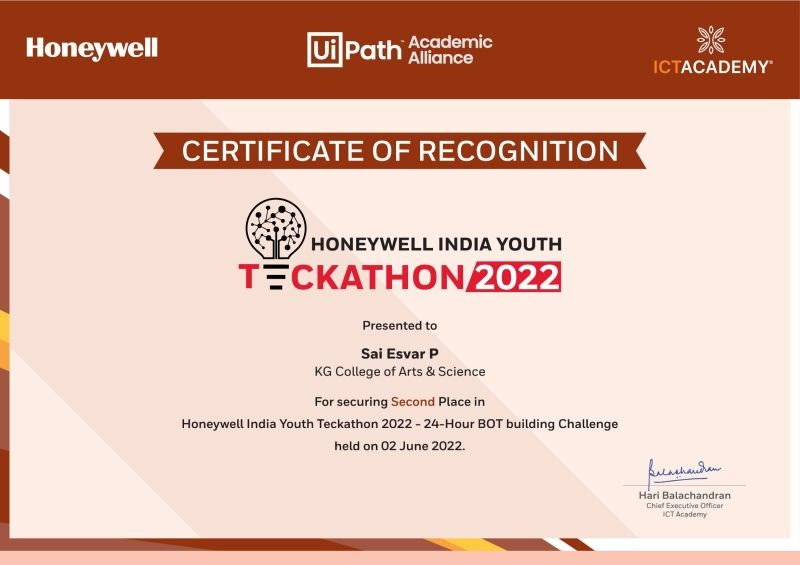
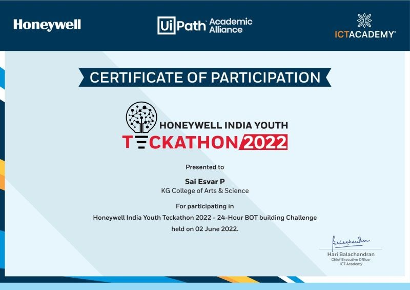

I am Sai Esvar P , Currently purusing my Pg degree in
KGiSL Institude Information Management
Accomplished !
Extramural Series.
Hi Friends ,
This Extramural series helped me figure out how to start and end conversations, along with many other factors that have improved my skills in it.


Hello everyone,
I secured second place in the Honeywell India Youth Teckathon 2022
and received my participation certificate to, which took place on June 2, 2022